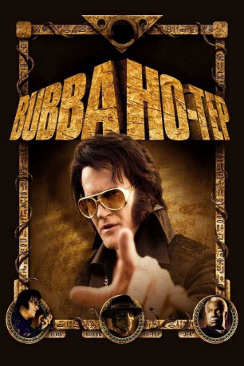

#5320 Bubba Ho-Tep
 
 IMDB-Wertung: 7.2 / 10
IMDB-Wertung: 7.2 / 10  Metascore: 0
Metascore: 0 
Ist Elvis Presley wirklich im August 1977 in seinem Badezimmer in Graceland gestorben? Wer schon immer geglaubt hat, dass der King noch lebt, sieht sich in Don Coscarellis skurriler Horrorkomödie Bubba Ho-Tep bestätigt: Elvis hat seinen Platz mit einem Imitator getauscht, aber die Papiere, die seine richtige Identität beweisen, sind bei einem Brand vernichtet worden. Gefangen in seiner getauschten Identität dämmert er daher in einem Altersheim in Texas vor sich hin, geplagt von Hüftbeschwerden, die er sich nach einem Sturz von der Bühne zugezogen hat. Natürlich glaubt ihm niemand – genauso wenig wie er seinem farbigen Mitbewohner Jack glaubt, dass er John F. Kennedy ist, der vom Geheimdienst eingefärbt und aus dem Verkehr gezogen wurde. Als die beiden entdecken, dass nachts eine 3.000 Jahre alte ägyptische Mumie ihr Unwesen in ihrem Altersheim treibt und den Bewohnern ihre Seelen aussaugt, kommt Leben in die beiden alten Herren...
Jahr: 2002
Dauer: 92 Minuten
FSK: 16
Land: USA Studio: Vitagraph FilmsTonspuren: DTS - ,
Untertitel:
Auflösung: 1080p (1920x1040) Größe: 6993 MB
Genre: Horror, Komödie, Fantasy, Mystery
Regisseur:  Don Coscarelli
Don Coscarelli
Drehbuch: Carlo Fedier
Soundtrack:
Darsteller:
 Bruce Campbell als Elvis Presley / Sebastian Haff
Bruce Campbell als Elvis Presley / Sebastian Haff Ossie Davis als Jack
Ossie Davis als Jack- Ella Joyce als The Nurse
- Heidi Marnhout als Callie
 Larry Pennell als Kemosabe
Larry Pennell als Kemosabe- Reggie Bannister als Rest Home Administrator
 Daniel Roebuck als Hearse Driver
Daniel Roebuck als Hearse Driver- Daniel Schweiger als Hearse Driver
- Cean Okada als Attending Nurse
- Chuck Williams als Elvis' Boy
- Timothy E. Goodwin als Elvis' Boy
- Gigi Bannister als Trailer Park Gal
- Andr�� Sogliuzzo als Narrator , uncredited
- Bob Ivy als Bubba Ho-tep
- Edith Jefferson als Elderly Woman
- Harrison Young als Elvis' Roommate
- Linda Flammer als Room Nurse
- Solange Morand als Iron Lung Lady
- Karen Placencia als Baby
- Bruce Rawitz als TV Announcer
- Joseph Primero als Janitor
- James Maley als Elvis' Boy
- Blaine Tyler als Elvis' Boy
- Steve Kassel als Sebastian's Band, Drums
- Damon Carruesco als Sebastian's Band, Guitar
- Lief Frederick als Sebastian's Band, Bass
- Danny Crossen als Sebastian's Band, Keyboards
- Emily Wengel als Trailer Park Gal
- Naveed Mahboobian als Egyptian Guard
- Omid Naimi als Egyptian Guard
- Joseph C. Boulder als Lunch Room Folks
- Virginia Brown als Lunch Room Folks
- Celia Gill als Lunch Room Folks
- Harvey Flammer als Lunch Room Folks
- Sylvia Flammer als Lunch Room Folks
- Ruth Hansen als Lunch Room Folks
- Mary Rose Waken als Lunch Room Folks
- Natasha Kurtz als Vintage Picture Model
- Avery Taylor als Vintage Picture Model
- Nadia Angelini als Vintage Picture Model
- Aaron Beebe als Person in crowd , uncredited
- Gabi Ferrer als Fan at concert , uncredited
- Regina Pope als Extra , uncredited
Datei: X:\2002\Bubba Ho-Tep (2002, FSK16, 1920x1040).mkv seit 12.01.2017
Festplatte: HD 1996-2002
 Es gibt insgesamt 93 Filme in der Gruppe '2002'
Es gibt insgesamt 93 Filme in der Gruppe '2002'